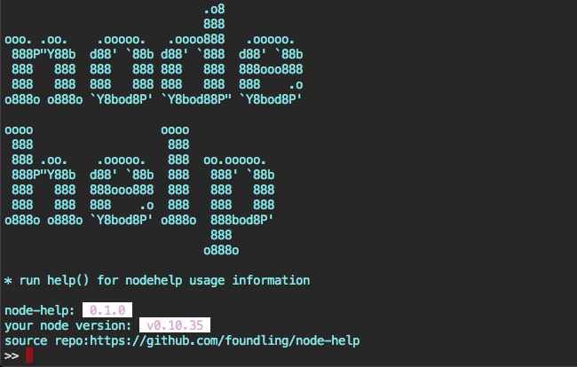
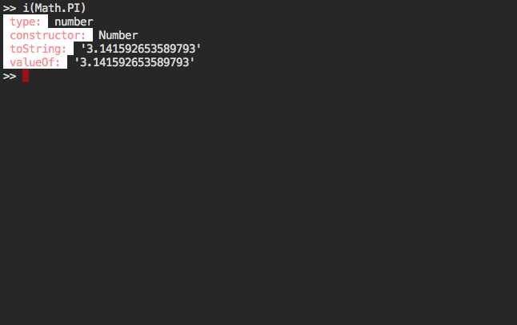
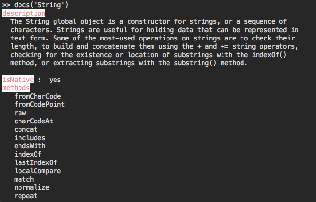
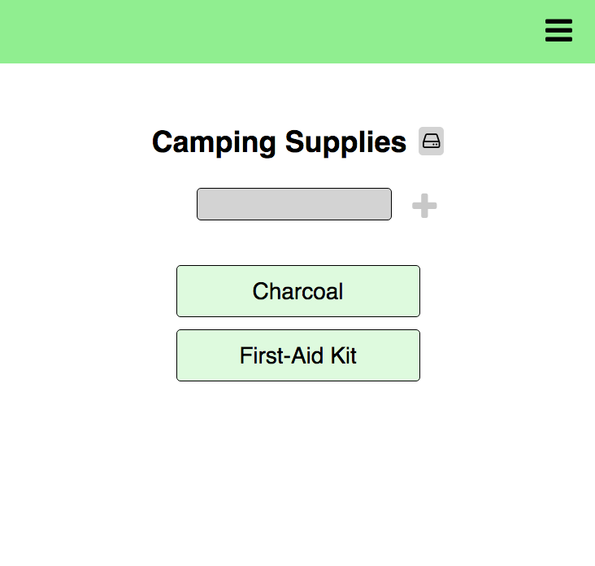
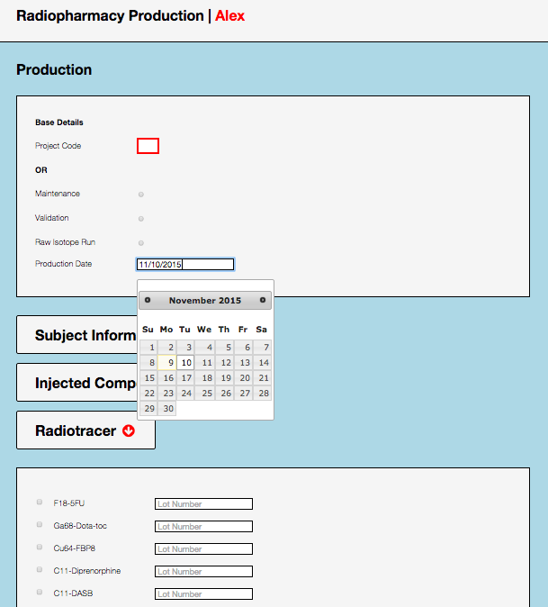
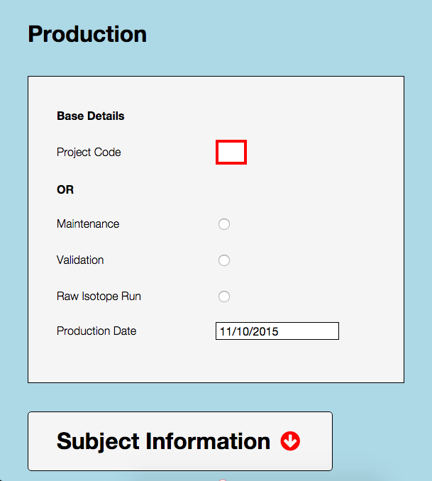
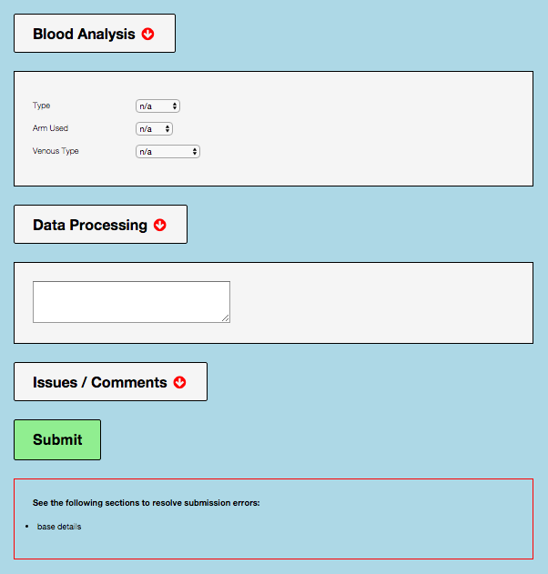
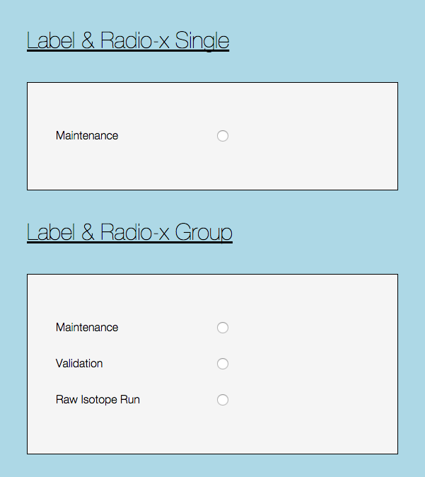
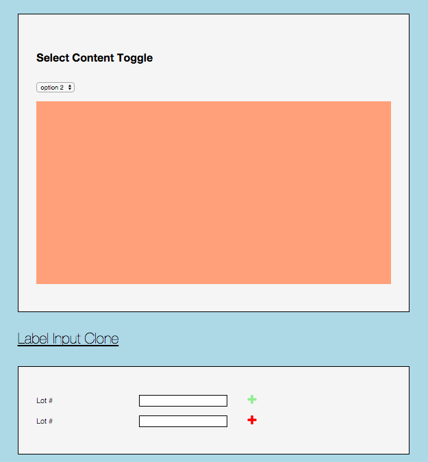

Projects
node-help [top]
node-help is a node module that integrates the standard node REPL with documentation and colors. Our sources currently include the Mozilla Developer Network JavaScript language references for ECMAScript5 and part of the Node api docs for your node version.
  list [top]
list is a fully tabbable task-list app leveraging the HTML5 Local Storage API. I wrote it using vanilla JavaScript, HTML and CSS.
billing interface [top]
This is a billing interface that I designed for the Hooker Lab at the Martinos Center in Charlestown, MA. After working with the group to determine the data flow, I distilled this into a set of compontents and composed the site from those. Additionally, I provided a style guide to demonstrate the range of available components and guide with future change.
    